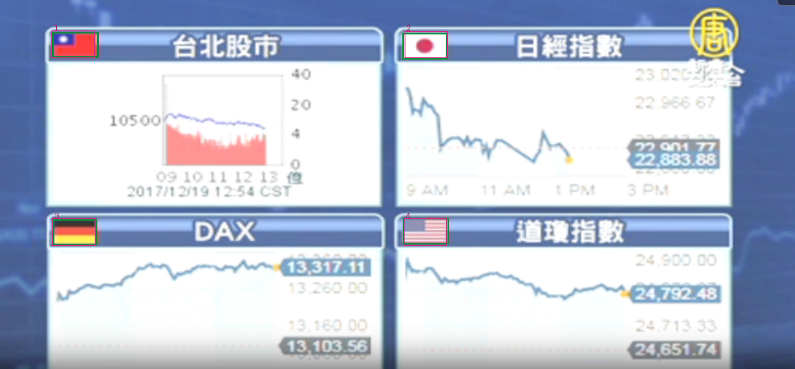

user_flags · normalized-custom-flags-names
TP 4 / FP 0 / FN 0 · 3.212 s

```json
[
{"bbox_2d": [65, 83, 119, 157], "label": "中华民国国旗", "category": "flag"},
{"bbox_2d": [509, 84, 563, 157], "label": "日本国国旗", "category": "flag"},
{"bbox_2d": [66, 592, 120, 666], "label": "德国联邦共和国国旗", "category": "flag"},
{"bbox_2d": [508, 592, 562, 666], "label": "美利坚合众国国旗", "category": "flag"}
]
```